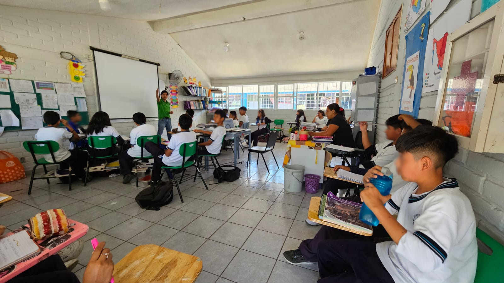
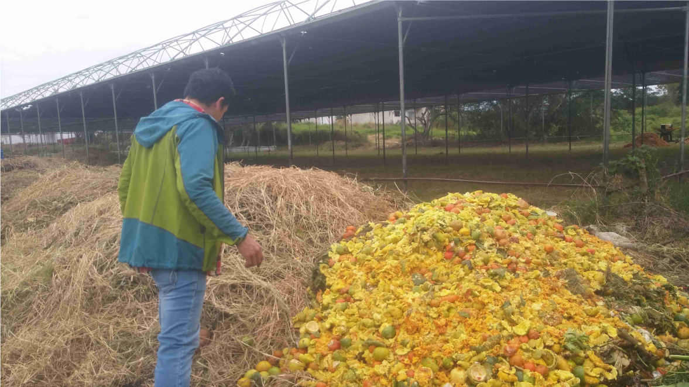
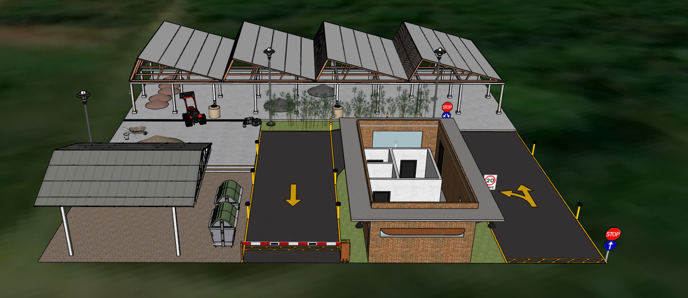

Como asesor ambiental comprometido con la sostenibilidad, ofrezco servicios integrales en educación y gestión ambiental.
Mis programas de educación ambiental están diseñados para fomentar la conciencia y la acción, abordando desde la gestión integral de residuos hasta la remediación ambiental,
la conservación de ecosistemas y la reforestación. Además, implemento viveros para la producción de especies nativas, esenciales para la restauración de áreas degradadas y la promoción de la biodiversidad.
Mi enfoque holístico busca empoderar a comunidades y organizaciones para adoptar prácticas sostenibles que aseguren un futuro más verde y resiliente.

Servicios integrales de capacitación y asesoría productiva en agroecología.
Mi enfoque se centra en la implementación de manejos agroecológicos sostenibles, la preparación de bioinsumos y
plaguicidas naturales, promoviendo la salud del suelo y las plantas.
Brindo asesoramiento especializado para optimizar actividades productivas en cultivos,
jardines, hortalizas y plantas del hogar, fomentando prácticas respetuosas con el medio ambiente y la biodiversidad.

Como biólogo especializado en soluciones agroecológicas, ofrezco una gama de bioinsumos de alta calidad diseñados para optimizar la salud de tus cultivos y el medio ambiente.
Desde potentes estimulantes a base de microorganismos benéficos como bacterias ácido lácticas y microorganismos de montaña, hasta fertilizantes nutritivos
y plaguicidas naturales que combaten eficazmente plagas sin dañar la salud ni el ecosistema.
Además, proporciono lombriz californiana para un compostaje eficiente y microorganismos especializados para acelerar la descomposición de materia orgánica,
transformándola en tierra fértil. Con mis productos, podrás cultivar de manera sostenible,
obteniendo cosechas abundantes y saludables mientras proteges nuestro planeta.

Servicio especializado con propuestas 3D de distribución espacial para centros de compostaje de diversas escalas.
Este servicio se basa en un enfoque biológico integral, considerando factores cruciales como lo son los espacios adecuados para la gestión del residuo orgánico
y el escurrimiento de lixiviados en las diferentes etapas del proceso,
el tratamiento y estabilización optimizando el manejo por medio de biotecnologías sustentables con el uso de micro organismos benéficos y los volúmenes de generación,